|
|
| hard corals text index | photo index |
| Phylum Cnidaria > Class Anthozoa > Subclass Zoantharia/Hexacorallia > Order Scleractinia > Family Psammocoridae |
| Boulder
sandpaper coral Psammocora sp.* Family Psammocoridae updated Nov 2019 Where seen? This smooth boulder-shaped coral with tiny star-like corallites is sometimes seen on some of our shores. Features: Colonies 20-40cm, boulder-shaped with irregular humps, some with rather angular bumps, others with polygonal ridges. The tiny corallites don't stick much out of the surface and merely give the skeleton a granular texture which gives the common name. When the polyp is retracted, the tiny holes of the corallite look like tiny petals of a flower. Polyps tiny (0.2cm) with short pointy tentacles. With the tentacles extended, the colony has a furry look. Colours seen include brown and bright green and bright blue. |
|
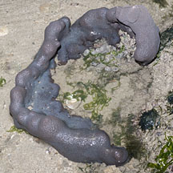 Pulau Sekudu, May 12 |
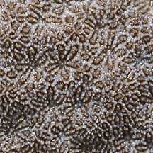 Polygonal ridges. Granular surface giving their common name of Sandpaper coral. |
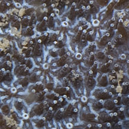 A closer look at the tiny corallites that form petal-like shapes like a flower. |
|
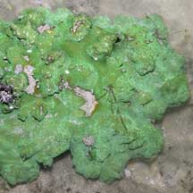 Labrador, Jun 05 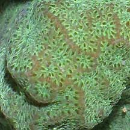 Angular bumps. |
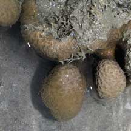 Pulau Hantu, Apr 07 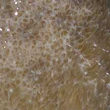 |
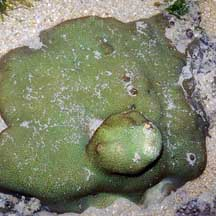 Tuas, Apr 05 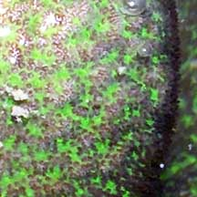 |
*Species are difficult to positively identify without close examination.
On this website, they are grouped by external features for convenience of display.
| Boulder sandpaper corals on Singapore shores |
On wildsingapore
flickr
|
| Other sightings on Singapore shores |
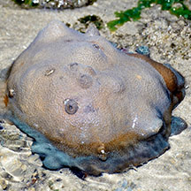 Chek Jawa, May 2025 |
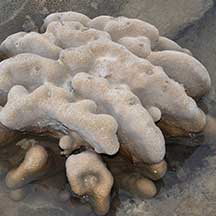 Tanah Merah Ferry Terminal, Jun 22 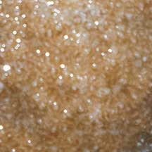 Photo shared by Dayna Cheah on facebook. |
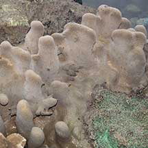 Tanah Merah Ferry Terminal, Jun 22 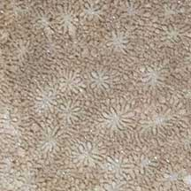 Photo shared by Dayna Cheah on facebook. |